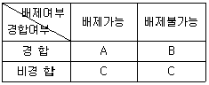
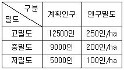
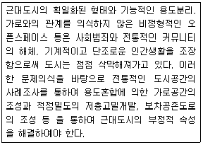
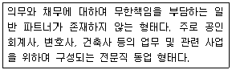
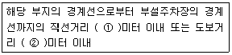

도시계획기사 (2012-05-20 기출문제)
1과목: 도시계획론
1. 인구성장의 상한선이 있는 것으로 가정하여 대도시 지역의 인구예측에 유용하게 사용될 수 있는 S자형의 비대칭곡선 형태를 띠는 인구추정모형은?
- 지수성장모형
- 수정된 지수성장모형
- 곰페르츠모형
- 비율예측모형
(정답률: 78%)

2. 성장관리에 대해서 주 및 지자체가 자신의 행정구역에 있어서 장래 개발의 속도, 양, 형태, 위치, 질에 의도적인 영향을 주고자 하는 것으로 정의를 내린 학자는?
- J. Gottmann
- P. Healey
- D. Godshalk
- H. Hoyt
(정답률: 66%)
3. 도시교통문제에 관심을 갖고 도시규모의 과대화를 방지하고 과잉교통을 배제하며 도시환경의 악화를 방지하기 위하여 선상의 유통체계가 도시형태를 결정하도록 하는 선형도시안을 주장한 사람은?
- 테일러(Taylor)
- 언윈(Unwin)
- 마타(Mata)
- 게데스(Geddes)
(정답률: 65%)
4. 1967년 도시 내의 상업·업무지역을 중심형 상업지구(nucleation), 가로변 상업지구 (ribbon) 및 특화지구(specialized area)로 구분한 학자는?
- 프라우푸트(Proudfoot)
- 사핀과 카이저(Chapin& Kaiser)
- 베리(Berry)
- 무쓰(Muth)
(정답률: 74%)
5. 학자에 따른 도시의 정의가 잘못 연결된 것은?
- 워스(L. Wirth) - 사회적으로 이질적인 사람들로 구성되어 있고 상대적으로 넓은 면적과 높은 인구밀도를 가진 정주지다.
- 웨버(M. Weber) - 주민의 대부분이 농업이 아닌 공업이나 상업에 종사하여 얻은 수입으로 생활하는 커다란 취락이다.
- 다비도프(P. Davidof) - 도시의 결정요인은 인구나 건물이 아니라 예술·문화·종교·민주적 정치형태다.
- 쇼버그(G. Sjoberg) - 지적 엘리트를 포함한 각종 비농업적 전문가가 많으며 상당한 규모의 인구와 인구밀도를 갖는 공동체다.
(정답률: 64%)
6. 토지이용에서 도시문제를 야기하는 대표적인 요인으로 거리가 먼 것은?
- 외부효과
- 이용 주체간의 경합성
- 기능중심의 교통계획과 차별성
- 토지의 난개발
(정답률: 61%)
7. 다음 중 학자와 그 계획안이 일치하지 않는 것은?
- Ebenezer Howard - 전원도시
- Tony Garnier - 공업도시
- P. Abercrombie - 대런던계획
- Frank Lloyd Wright - 빛나는 도시
(정답률: 61%)
8. 경합성과 배재성에 따른 재화의 분류 중 A에 해당하는 재화에 대한 설명으로 옳은 것은?

- 대가를 지불할 필요성이 없고 소비를 제한할 방법도 없기 때문에 아무도 생산하려고 하지 않는다.
- 시장기구가 재화를 공급할 수 없기 때문에 공급의 문제가 심각하다.
- 시장기구를 통한 공급이 가능하며, 이렇게 하는 것이 자원 배분상 효율적이다.
- 측정이 곤란하고 소비자에게 선택의 여지가 없어 재화의 공급량과 가격 결정에 공공이 개입하게 된다.
(정답률: 76%)
9. 개발로 인하여 기반시설이 부족할 것으로 예상되나 기반시설을 설치하기 곤란한 지역을 대상으로 건폐율이나 용적률을 강화하여 적용하기 위하여 지정하는 구역을 무엇이라고 하는가?
- 개발밀도관리구역
- 기반시설부담구역
- 시가화조정구역
- 성장억제구역
(정답률: 76%)
10. 도시의 새로운 계획 패러다임의 방향이 아닌 것은?
- 시민참여의 확대와 계획 및 개발주체의 단일화
- 도·농 통합적 계획으로의 전환
- 에너지 절약형 도시개발로의 전화
- 입체적·기능통합적 토지이용관리
(정답률: 84%)
11. 집산도로의 기능에 대한 설명으로 옳은 것은?
- 가구를 구획하고 택지로의 접근성을 높이는 것을 목적으로 한다.
- 근린주거구역의 교통을 보조간선도로에 연결하여 근린 주거구역 내 교통의 집산기능을 한다.
- 도시 내 주요 지역을 연결하거나 시·군의 골격을 형성한다.
- 대량 통과교통의 처리를 목적으로 하여 도시 내의 골격을 형성한다.
(정답률: 78%)
12. 용적률이 600%이고 12층인 건축물의 건폐율은?
- 30%
- 40%
- 50%
- 60%
(정답률: 87%)
13. 도시에 대한 일반적인 설명으로 가장 거리가 먼 것은?
- 도시는 다수의 인구가 비교적 좁은 장소에 밀집하여 거주 하며 농촌에 비하여 인구밀도가 비교적 높다.
- 1차 산업의 비율이 낮고 2·3차 산업의 비율이 높은 비농업적 활동이 주로 일어나는 곳이다.
- 도시는 행정·경제·문화의 중심지 기능을 담당하며 독특한 문화와 새로운 문명을 개척하는 삶의 터전이 된다.
- 주민 구성에 있어 이질적인 집단의 성격이 강하고, 주민간의 상호접촉은 빈번하고 광범위하며, 주로 항시적이고 직접적인 특징이 있다.
(정답률: 72%)
14. 도시정보체계(Urban Information System)의 하나인 토지정보체계(Land Information System)를 구축함으로써 얻을 수 있는 장점으로 틀린 것은?
- 관계 행정기관 상호 간의 자료교환체계의 구축으로 관련 업무의 신속화가 가능
- 시민들에게 토지정보 제공으로 투명한 토지행정 실현
- 토지 관련 일상 업무의 효율화와 계획수립업무의 과학화 실현
- 정확한 토지정보 구축으로 인한 토지가치의 상승
(정답률: 71%)
15. 계획이론 중 종합적 계획이 갖는 비현실성에 대한 비판과 보완에서 출발하여, 논리적 일관성이나 최적의 해결 대안을 제시하는 것보다는 지속적인 조정과 적용을 통하여 계획의 목표를 추구하는 접근 방법을 제시한 이론과 학자의 연결이 옳은 것은?
- Friedmann - 교류적 계획(Transactive planning)
- Davidoff - 옹호적 계획(Advocacy planning)
- Faludi - 체계적 계획(System planning)
- Lindblom - 점진적 계획(Incremental planning)
(정답률: 75%)
16. 넬슨(Arthur C. Nelson)과 듀칸(Janes B. Ducan)이 정리한 성장관리정책의 목적에 해당하지 않는 것은?
- 어반 스프롤(Urban sprawl)의 방지
- 세수의 증대
- 효율적인 도시형태의 구축
- 경제적 효율성 제고
(정답률: 66%)
17. 도시공간구조 이론 중 해리스와 울만이 제시한 다핵심구조 이론(multiple-nuclei theory)에서의 기능지역에 해당하지않는 것은?
- 도시교통시설지역
- CBD
- 중공업지역
- 교외주거지역
(정답률: 69%)
18. 국토계획의 개념으로 틀린 것은?
- 국토계획은 전 국토를 대상으로 하는 계획이다.
- 국토계획은 국토에서 일어나는 여러 가지 인간 활동의 공간적 배분 문제를 다루는 공간계획이다.
- 국토계획은 국토의 공간구성과 관련되는 모든 분야가 망라되는 종합계획이다.
- 국토계획은 지방자치단체가 주체가 되어 수립한 계획을 종합한 계획이다.
(정답률: 85%)
19. 도시에서 보전 가치가 높은 특정 지역에 대해 용도를 규제하는 대신 그에 상응하는 개발권을 토지소유자에서 부여하여 제한되는 권리만큼의 손실을 보상해주는 제도는?
- 도시재개발 제도
- 개발권양도 제도
- 도시재정비 제도
- 뉴타운개발 제도
(정답률: 83%)
20. 다음 중 도시를 도시 기능에 따라 분류한 것은?
- 산업도시
- 침상도시(Bed Town)
- 중소도시
- 급성장도시
(정답률: 46%)
2과목: 도시설계 및 단지계획
21. 주거형 지구단위계획에서 단독주택용지의 가구 및 획지 계획 기준으로 틀린 것은?
- 획지의 형상은 건축물의 규모와 배치, 인동간격, 높이, 토지이용, 차량동선, 녹지공간의 확보 등을 고려하여 장방형 또는 정방형의 형태를 결정하되, 가능하면 남북방향으로의 긴 장방형으로 한다.
- 단독주택용 획지로 구성된 소가구는 근린의식 형성이 용이하도록 10~24획지 내외로 구성하며 장변이 120m를 초과할 경우에는 장변 중간에 보행자도로를 삽입하는 것이 좋다.
- 대가구의 규모는 어린이 놀이터 하나를 유지하는 거리로 반경 150 ~ 250m를 기준으로 한다.
- 대가구내 도로계획은 단조로움과 통과교통 방지를 위하여 3지 교차도로 및 루프(loop)형 도로를 배치한다.
(정답률: 55%)
22. 주거단지계획 시 생활권의 단계와 생활 시설배치의 관계로 옳은 것은?
- 생활권의 단계에 따라 시설의 종류와 규모를 달리한다.
- 시설의 종류는 동일하고 생활권의 단계에 따라 규모를 달리한다.
- 생활권의 단계와 관계없이 초등학교는 항상 1개소만 둔다.
- 생활권의 단계와 관계없이 도보거리 500m를 기준으로 시설을 배치한다.
(정답률: 79%)
23. 슈퍼블럭(Super block)의 장점과 거리가 먼 것은?
- 공동의 오픈스페이스 확보
- 전통적 가로경관의 유지
- 공급처리시설의 공동화 가능
- 자동차 통과교통의 방지
(정답률: 73%)
24. 주거단지 내의 밀도계획을 아래와 같이 하고자 할 때, 상정 인구밀도에 의하여 계산한 주거용지의 총 면적은?

- 80ha
- 1⑤ha
- 125ha
- 145ha
(정답률: 71%)
25. 공원·녹지 체계의 유형 중 일정 폭의 녹지를 직선적으로 길게 조성하는 것으로 완충녹지에서 많이 볼 수 있으며, 인도의 찬디가르(Chandigarh)에서 볼 수 있는 유형은?
- 집중형
- 분산형
- 대상형
- 격자형
(정답률: 80%)
26. Spreiregen은 외부공간에서의 폐쇄성은 수직면에서 관찰자까지 거리(D)와 수직면의 높이(H)간의 비율로 결정되고, Ashihara는 사람의 키에 대한 벽면이나 구조물의 높이에 의해서 폐쇄성이 결정된다고 했다. 다음 중 Spreiregen과 Ashihara이 폐쇄성이 거의 상실되는 기점으로 설명한 각각의 조건이 모두 옳은 것은?
- D/H=1, 180cm
- D/H=2, 150cm
- D/H=3, 120cm
- D/H=4, 60cm
(정답률: 63%)
27. 주간선도로와 보조간선도로의 배치간격 기준은?
- 1000m 내외
- 750m 내외
- 500m 내외
- 250m 내외
(정답률: 79%)
28. 1970년 네덜란드의 델프트시에서 최초로 등장한 보차공존 도로는?
- 쿨데삭(cul-de-sac)
- 본 엘프(Woonerf)
- 커뮤니티 도로
- 트랜짓몰(transit mall)
(정답률: 74%)
29. 경관분석을 위해 구역의 넓이, 분석의 정밀도 등에 따라 그리드(grid)의 크기를 나누고 등급화하여 등급별 그리드 수에 의해 경관의 특색을 도출하는 경관 분석 방법은?
- 기호화 방법
- 생태학적 방법
- 사진판독법
- 메쉬(Mesh)에 의한 방법
(정답률: 83%)
30. 생활편익시설의 배치 시, 노선형에 비해 집합형으로 배치하였을 때의 특징으로 틀린 것은?
- 시설 상호간의 유기적 관련성이 높다.
- 상점의 입장에서는 충분한 주차공간의 확보가 어렵다.
- 공공공간의 공동 이용으로 용지의 면적이 절약된다.
- 활력 있는 가로 분위기를 조성할 수 있다.
(정답률: 54%)
31. 도시설계에 관하여 아래와 같이 주장한 미국의 사회학자는?

- Herbert Gans
- Jane Jacobs
- Kevin Lynch
- Paul D. Spreiregen
(정답률: 64%)
32. 지구단위계획의 특별계획구역에 대한 설명으로 틀린 것은?
- 지구단위계획구역 중에서 계획의 수립 및 실현에 상당한 기간이 걸릴 것으로 예상되어 별도의 개발안이 필요한 경우에는 특별계획구역으로 지정할 수 없다.
- 특별계획구역에 대한 계획내용은 지구단위계획에 포함하여 결정한다.
- 지구단위계획을 입안할 때 조건에 해당하는 곳을 특별계획구역으로 반영하여 함께 지정한다.
- 도시·군관리계획으로 결정하는데 있어 법령에서 지구단위계획으로 결정하도록 한 부분이 있는 경우에는 이들 모두를 도시·군관리계획으로 결정하여야 한다.
(정답률: 55%)
33. 도로의 종류에서 도로의 사용 및 형태별 구분에 해당하지않는 것은?
- 일반도로
- 고가도로
- 간선도로
- 지하도로
(정답률: 55%)
34. 케빈 린치(Kevin Lynch)가 그의 저서 “도시의 이미지”에서 공공이미지를 만들어 내는 5가지 요소로 정의하지 않은 것은?
- 결절점(node)
- 조경(landscape)
- 지구(district)
- 통로(paths)
(정답률: 88%)
35. 보행자 공간의 역할과 거리가 먼 것은?
- 쾌적한 보행자 공간의 조성을 통해 연도상가의 환경을 개선시킬 수 있다.
- 안락하고 편리한 보행자 공간을 이용하여 보행자들이 목적지까지 편리하게 도달할 수 있게 한다.
- 산책, 놀이, 대화 등의 생활공간으로 활용될 수 있다.
- 특정 주택단지의 정체성을 높여 저소득 계층과의 구분이 가능하도록 해 준다.
(정답률: 89%)
36. 1875년 영구에서 불결한 도시주거환경을 제거하기 위해 새로이 건설되는 주택의 상하수도 시설과 정원크기 및 주변 도로의 폭 등 주거환경기준을 규제하는 목적으로 제정된법은?
- 건축법(building code)
- 미관지구에 관한 법(law of beautification district)
- 단지조성법(site planning act)
- 공중위생법(public health act)
(정답률: 74%)
37. 주택단지의 총세대수가 2000세대 이상인 경우, 주택단지에 이르는 진입도로의 폭 또는 기간도로와 접하는 폭은 최소 얼마이상으로 하여야 하는가?
- 20m
- 15m
- 12m
- 8m
(정답률: 67%)
38. 페리의 근린주구이론에서 근린단위(neighborhood unit)의 규모를 결정하는 구분 기준이 되는 시설은?
- 동사무소
- 우체국
- 놀이터
- 초등학교
(정답률: 92%)
39. 지구단위계획구역의 지정에 관한 도시·군관리계획결정의 고시일 부터 얼마 이내에 그 지구단위계획구역에 관한 지구단위계획이 결정·고시되지 아니하면 그 효력을 잃는가?
- 1년 이내
- 2년 이내
- 3년 이내
- 4년 이내
(정답률: 52%)
40. 지테(Camillo Sitte)의 예술적 원리에 근거한 도시공간의 내용과 거리가 먼 것은?
- 도시공간은 연속적으로 존재해야 한다.
- 고대와 중세의 도시공간과는 다른 새로운 예술적 도시공간을 조성해야 한다.
- 도시를 확장하는데 문화재의 보존문제에 관심을 가져야한다.
- 건물은 광장이나 기타 요소와 상호관계되는 경우에만 의미를 갖는다.
(정답률: 69%)
3과목: 도시개발론
41. 용도지역제와 획지분할규제를 근간으로 하는 미국의 종래 택지개발방식이 지니는 문제점을 극복하기 위한 제도로, 공적 입장에서 요구되는 환경의 질과 개발자의 입장에서 요구되는 사업성을 동시에 추구하고자 한 것은?
- TDR
- IP
- PUD
- U-city
(정답률: 73%)
42. 자산담보부증권(ABS)에 대한 설명으로 옳지 않은 것은?
- 자산을 기초로 발생하는 경우에는 대차대조표에는 영향을 미치지 않는 부외금융이라는 이점이 있다.
- 사업주의 신용이 낮은 경우에도 자금을 조달할 수 있다.
- 대출과 달리 유가증권의 형태로 유동화 한다.
- 다른 수단에 비하여 간편하지만 운용보수가 높다.
(정답률: 53%)
43. 도로의 기능별 구분 및 그 내용이 옳지 않은 것은?(단, 도시계획시설의 결정·구조 및 설치기준에 관한 규칙에 따른다.)
- 주간선도로: 시·군내 주요지역을 연결하거나 시·군 상호간을 연결하여 대량통과교통을 처리하는 도로
- 보조간선도로: 주간선도로를 집산도로 또는 주요 교통 발생원과 연결하여 시·군 교통의 집산기능을 하는 도로
- 집산도로: 가구를 구획하는 도로
- 특수도로: 보행자전용도로, 자전거전용도로 등 자동차 외의 교통에 전용되는 도로
(정답률: 72%)
44. 나폴레옹 3세의 명령에 의해 오스만이 추진한 것으로, 근대적 도시재개발의 시작이라고 할 수 있는 것은?
- 런던 개조 계획
- 파리 개조 계획
- 콜럼비아 도시미 운동
- 말로법에 의한 주거환경개선사업
(정답률: 80%)
45. 단일 또는 소수의 프로젝트를 신디케이트하는 경우 또는 부동산 사업에 자본을 모집하기 위한 수단으로 파트너십(partnership)의 형태가 많이 활용되고 있다. 다음은 어떤 형태의 파트너십을 설명하고 있는가?

- 일반 파트너십(General Partnership)
- 무한 파트너십(Unlimited Partnership)
- 유한 파트너십(Limited Partnership)
- 유한책임 파트너십(Limited Liability Partnership)
(정답률: 59%)
46. 환지계획에서 사업에 필요한 경비를 조달하고 공공시설 설치에 필요한 용지를 확보하기 위해 정하는 것은?
- 체비지·보류지
- 청산환지
- 입체환지
- 증환지
(정답률: 81%)
47. 도시개발사업을 위한 재원조달방안인 지분조달방식에 대한 설명으로 옳지 않은 것은?
- 원리금이나 이자의 상환부담이 없다.
- 중소기업의 경우 주식 공개매매, 유통시장이 발달되지 않는다.
- 자본시장의 여건에 따라 조달이 민감하게 영향을 받는다.
- 조달규모의 증대로 소유자의 지분이 크게 확대된다.
(정답률: 52%)
48. 압축도시(compact city)에 대한 설명으로 옳지 않은 것은?
- 토지이용은 고밀개발을 추구한다.
- 압축도시 개발은 직주근접과 관련이 있다.
- 압축도시 개발을 위해서는 단일용도의 토지이용이 이루어져야 한다.
- 에너지사용을 줄이고 환경오염을 최소화할 수 있는 도시형태다.
(정답률: 83%)
49. 수도권에 집중되어 있는 공공기관을 지방으로 이전하는 계기로 이들 기관과 지역의 대학, 연구소, 지방자치단체가 협력하여 지역의 새로운 성장동력을 창출하는 것을 목표로 하는 것은?
- 혁신도시개발사업
- 기업도시개발사업
- 행정중심복합도시사업
- 도시환경재정비사업
(정답률: 78%)
50. 1920년대에 위성도시안을 제안한 사람이 아닌 자는?
- 테일러(G. R. Taylor)
- 라딩(A. Rading)
- 기버드(F. Gibberd)
- 휘튼(R. Whitten)
(정답률: 60%)
51. 바다, 하천, 호수 등 수변공간을 가지는 육지에 개발된 공간을 무엇이라 하는가?
- 워터프론트
- 역세권
- 지하공간
- 텔레포트
(정답률: 89%)
52. 대중교통역과 대중교통 노선의 거점을 중심으로 보행거리 내에 있는 토지를 복합고밀로 개발하여 대중교통의 이용율을 높이고 교통혼잡과 도시에너지 소비를 경감시키고자 Peter Calthorpe에 의해 처음으로 주창된 것은?
- TDR
- TOD
- PUD
- TOP
(정답률: 86%)
53. 공공사업을 비용과 편익을 사회적 입장에서 분석하여, 수익률을 계산하고 이를 바탕으로 공공투자사업이나 정책의 타당성을 분석하는 것을 무엇이라 하는가?
- 재무분석
- 민감도분석
- 자금순환분석
- 경제성분석
(정답률: 75%)
54. 재개발을 시행하는 방식에 따른 분류에 해당하지 않는 것은?
- 수복재개발(rehabilitation)
- 단지재개발(reblocking)
- 보전재개발(conservation)
- 전면재개발(redevelopment)
(정답률: 81%)
55. 프로젝트 파이낸싱(PF : Project Financing)의 자금조달 형태 중 가장 큰 비중을 차지하며 대부분 상업은행에서 제공되는 차입금(이자수익을 목적으로 투자)이 이에 해당하는 것은?
- 선순위 채권
- 후순위 채무
- 자기자본
- 부동산펀드
(정답률: 70%)
56. 도시개발사업의 방식 중 수용 또는 사용방식이 환지방식 이나 혼용방식과 비교하여 갖는 특징으로 옳지 않은 것은?
- 초기투자비가 막대한 편이다.
- 이주대책을 마련하는 데에 어려움이 따를 수 있다.
- 사업기간이 상대적으로 많이 걸린다.
- 전면매수에 다른 토지주의 반발이 많아질 수 있다.
(정답률: 68%)
57. 개발수요분석에 활용되는 예측 모형 중 정량적 모형에 해당하지 않는 것은?
- Huff모형
- 중력모형
- 시계열분석
- 델파이법
(정답률: 75%)
58. 일반마케팅과 비교하여 도시마케팅이 갖는 특징으로 옳지 않은 것은?
- 마케팅의 핵심적인 주체는 도시정부다.
- 도시의 발전이나 성장보다는 이윤의 극대화를 마케팅의 주요 목표로 한다.
- 도시 또는 도시 내 특정 장소라는 일정한 공간적 단위 그 자체를 상품화한다.
- 상품 자체가 지리적으로 이동할 수 없어, 이를 생산·판매·소비하는 경제주체들의 이동이 중요하다.
(정답률: 62%)
59. 도시개발의 사업성 분석을 위한 사업성 평가 지표 중, 순현재가치(financial net present value, FNPV)에 관한 설명으로 맞는 것은?
- 프로젝트로부터 발생하는 할인된 전체수입을 할인된 전체비용으로 나눈 값이다.
- 프로젝트로부터 발생하는 수입과 비용을 같게 만들어주는 할인율이다.
- 순현재가치가 1보다 클 때 프로젝트의 사업성은 있다고 할수 있으며, 반대로 1보다 작을 때 그 프로젝트의 사업성은 없는 것으로 평가된다.
- 프로젝트로부터 발생하는 할인된 전체수입에서 할인된 전체비용을 빼준 값이다.
(정답률: 57%)
60. 국가나 지방자치단체가 도시개발사업에 필요한 토지 등을 수용하거나 사용하기 위한 기준은?
- 사업대상 토지면적의 1/3 이상에 해당하는 토지를 소유하고 토지 소유자 총수의 1/2 이상에 해당하는 자의 동의를 받아야 한다.
- 사업대상 토지면적의 1/2 이상에 해당하는 토지를 소유하고 토지 소유자 총수의 1/3 이상에 해당하는 자의 동의를 받아야 한다.
- 사업대상 토지면적은 2/3 이상에 해당하는 토지를 소유하고 토지 소유자 총수의 1/2 이상에 해당하는 자의 동의를 받아야 한다.
- 사업대상 토지면적의 2/3 이상에 해당하는 토지를 소유하고 토지 소유자 총수의 1/3 이상에 해당하는 자의 동의를 받아야 한다. 한국 도시계획기사 전문 과외
(정답률: 90%)
4과목: 국토 및 지역계획
61. 고트만(J. Gottmann)은 미국 동북부 대서양 연안 지대에 나타나는 연담도시형의 대규모 대도시군을 무엇이라 하였는가?
- 메트로폴리스
- 메갈로폴리스
- 다이애나폴리스
- 에큐메노폴리스
(정답률: 66%)
62. 다음 중 P. Cooke(1992)가 제시한 지역 혁신 체제의 상부 구조(super structure)에 해당하지 않는 것은?
- 지역의 조직과 제도
- 지역의 문화
- 지역의 규범
- 지역의 연구소 및 금융기관
(정답률: 58%)
63. 국토의 다핵화를 위하여 대전 및 광주 등 제1차 성장거점과 청주, 춘천, 전주 등 제2차 성장거점을 제시하고 전국을 28개의 지역생활권으로 나누어 생활권의 성격과 규모에 따라 5개의 대도시생활권, 17개의 지방도시생활권, 6개의 농촌도시 생활권으로 구분하였던 계획은?
- 제1차국토종합개발계획
- 제2차국토종합개발계획
- 제3차국토종합개발계획
- 제4차국토종합계획
(정답률: 79%)
64. 환경정책기본법에 근거하여 토지의 환경성을 평가하여 보전이 필요한 지역과 개발이 가능한 지역을 구분하고, 그 결과를 지형도에 표시한 도면은?
- 국토환경성평가도
- 비오톱지도
- 토지적성평가
- 생태·자연도
(정답률: 73%)
65. 한센(N. Hansen)이 과밀지역, 중간지역, 낙후지역으로 지역을 구분한 기준은?
- 기능지역
- 동질지역
- 사업지역
- 계획지역
(정답률: 57%)
66. 지역문제가 발생하는 원인으로 틀린 것은?
- 지역마다 가지고 있는 자연자원 또는 입지적 조건의 차이가 있기 때문에 발생한다.
- 지역분석에 대한 기술의 개발에 따라 상대적인 비교방법이 발달하였기 때문에 발생한다.
- 지역마다 특유한 산업구조를 갖게 되며 이것이 경제적으로 영향을 주기 때문에 발생한다.
- 지역주민의 발전의지, 발전이나 성장에 유익한 가치관이나 문화적 특성이 지역마다 다르기 때문에 발생한다.
(정답률: 73%)
67. 다음 중 결절지역의 분석에 적용하는 자료로 거리가 먼 것은?
- 전신·전화
- 도매 시장권
- 산업별 구성비
- 인구 이동과 통근
(정답률: 42%)
68. 수도권정비계획에서 징수된 과밀부담금을「국가균형발전특별법」에 따른 광역·지역발전 특별회계와 과밀부담금을 징수한 건축물이 있는 시·도에 귀속하는 배분 비율은?
- 25% : 75%
- 50% : 50%
- 75% : 25%
- 100% : 0%
(정답률: 65%)
69. 도시지역의 주거입지를 설명하는 주거지 상쇄모형에서 상쇄의 대상이 되는 것은?
- 주거비용과 통근비용
- 소득과 소비
- 주택규모와 주택의 질적수준
- 승용차와 대중교통
(정답률: 65%)
70. 베버(Alfred Weber)의 공업입지론에서 공장의 최적입지를 결정하는 세 가지 요인에 해당하지 않는 것은?
- 운송비
- 노동비
- 집적의 이익
- 소비자 규모
(정답률: 75%)
71. 전국의 인구는 5천만명, 전국의 섬유산업 종사자수가 1백 만명이고, A도시의 인구가 2백만명, 섬유산업 종사자수가 5만명 일 때, A도시 섬유 산업의 입지계수(LQ)는?
- 0.8
- 1.0
- 1.25
- 1.5
(정답률: 63%)
72. 크리스탈러(W. Christaller)의 중심지이론에서 중심지의 계층을 형성하는 포섭원리에 해당하지 않는 것은?
- 시장 원리
- 교통 원리
- 행정 원리
- 임계 원리
(정답률: 78%)
73. 인간이 필요로 하는 최소한의 재화와 서비스 품목을 최저 소득집단에게 공급해 주고자 하는 지역개발전략은?
- 농촌개발전략
- 기본수요전략
- 오지개발전략
- 성장거점전략
(정답률: 82%)
74. 지역의 경제성장을 순환적·누적적 인과원리(principle of circular and cumulative causation)로 설명한 학자는?
- Myrdal
- Smith
- Rabanau
- Hirschman
(정답률: 58%)
75. 합리적 계획모형을 비판하는데서 출발하여 계획은 자본주의 생산양식의 관점에서 분석되어야 하며 특정 이념에만 기능하는 대신 역사적 관계와 정치·사회·경제적 맥락을 전반적으로 조명하여야 한다고 강조하는 지역계획모형은?
- 혼합적 계획(mixed planning) 모형
- 옹호적 계획(advocacy planning) 모형
- 교류적 계획(transactive planning) 모형
- 정치경제 계획(political economy planning) 모형
(정답률: 82%)
76. 로렌츠곡선(Lorenz curve)을 통해 파악할 수 있는 것은?
- 지역생산구조
- 지역소득분배
- 지역고용인구
- 지역소득수준
(정답률: 60%)
77. 본 튀넨이 주장한 농업입지이론에서 토지이용패턴에 영향을 주는 근본적인 요인은 무엇인가?
- 임금수준
- 인구밀도
- 중심부로의 접근성
- 토지의 비옥도
(정답률: 49%)
78. 그리스의 도시계획가인 독시아디스(Doxiadis)가 제시한 인간정주사회의 구성요소가 아닌 것은?
- 네트워크
- 자연
- 인간
- 문화
(정답률: 55%)
79. 광역계획권이 도의 관할 구역에 속하여 있는 경우, 다음중 광역계획권을 지정하는 자는?
- 대통령
- 도지사
- 국무총리
- 국토해양부장관
(정답률: 52%)
80. 수도권정비계획법상 수도권정비권역의 구분에 해당하지않는 것은?
- 과밀억제권역
- 개발유도권역
- 자연보전권역
- 성장관리권역
(정답률: 80%)
5과목: 도시계획관계법규
81. 시장·군수가 직접 정비사업(주거환경개선사업은 제외)의 시행자가 될 수 있는 경우가 아닌 것은?
- 천재·지변 그 밖의 불가피한 사유로 인하여 긴급히 정비사업을 시행할 필요가 있다고 인정되는 때
- 당해 정비구역안의 국·공유지면적이 전체 토지면적의 3분의 1이상일 때
- 지방자치단체의 장이 시행하는 도시·군계획사업과 병행하여 정비사업을 시행할 필요가 있다고 인정되는 때
- 순환정비방식에 의하여 정비사업을 시행할 필요가 있다고 인정되는 때
(정답률: 42%)
82. 산업입지 및 개발에 관한 법률에 의가하여 산업입지정책에 관한 중요 사항을 심의하기 위하여 국토해양부에 두는 위원회는?
- 산업입지정책심의회
- 산업입지평가위원회
- 산업정책위원회
- 국토정책심의회
(정답률: 62%)
83. 수도권정비계획에 관한 설명으로 틀린 것은?
- 수도권정비계획의 대상이 되는 수도권이란 서울특별시와 인천광역시만을 말한다.
- 수도권정비계획은 수도권의 도시·군계획, 그 밖에 다른 법령에 따른 토지 이용 계획 또는 개발계획 등에 우선하며, 그 계획의 기본이 된다. 다만, 수도권의 군사에 관한 사항에 대하여는 그러하지 아니하다.
- 중앙행정기관의 장과 서울특별시장·광역시장은 수도권 정비계획을 입안한다.
- 국토해양부장관은 수도권정비계획안을 수도권정비위원회의 심의를 거친 후 국무회의의 심의와 대통령의 승인을 받아 결정한다.
(정답률: 69%)
84. 다음 중 신고 체육시설업에 해당하지 않는 것은?
- 골프연습장업
- 스키장업
- 빙상장업
- 종합 체육시설업
(정답률: 60%)
85. 택지개발촉진법에 따른 환매권에 대한 내용으로 옳은 것은?
- 환매권자는 환매로써 제3자에게 대항할 수 있다.
- 환매권자의 권리의 소멸에 관하여는 공익사업을 위한 토지 등의 취득 및 보상에 관한 법률을 준용할 수 없다.
- 환매권자는 환매권이 발생한 날로부터 2년 이내에 환매 할 수 있다.
- 환매권은 택지개발지구의 지정 해제에 의한 사유로만 권리가 발생한다.
(정답률: 67%)
86. 도시계획시설의 결정에 대한 설명으로 틀린 것은?
- 기반시설에 대한 도시관리계획결정은 당해 도시계획시설의 종류와 기능에 따라 그 위치·면적 등을 결정하여야 한다.
- 둘 이상의 도시계획시설을 같은 토지에 함께 결정할 수 없다.
- 도시계획시설이 그 규모로 인하여 공간이용에 상당한 영향을 주는 건축물인 시설의 경우 건폐율·용적률 및 높이의 범위를 함께 결정하여야 한다.
- 도시계획시설이 위치하는 지역의 적정하고 합리적인 토지이용을 촉진하기 위하여 도시계획시설이 위치하는 공간의 일부만을 구획하여 도시계획시설결정을 할 수 있다.
(정답률: 60%)
87. 건축물을 건축하고자 하는 자가 그 대자의 일부를 공공시설 부지로 제공하는 경우에 당해 건축물에 대한 규정 용적률의 200% 이하의 범위 안에서 대지면적의 제공비율에 따라 용적률을 따로 정할 수 있는 지역⋅지구 또는 구역에 해당하지 않는 것은?(단, 국토의 계획 및 이용에 관한 법령에 따른다.)
- 도시 및 주거환경정비법에 의한 도시환경정비사업을 시행하기 위한 정비구역
- 주택재건축사업을 시행하기 위한 정비구역
- 상업지역
- 개발진흥지구
(정답률: 37%)
88. 주차장법상 주차전용건축물에 관한 설명으로 틀린 것은?
- 주차전용건축물이란 건축물의 연면적 중 주차장으로 사용되는 부분의 비율이 95% 이상인 것을 말한다.
- 기계식주차장의 연면적은 기계식주차장치에 의하여 자동차가 주차할 수 있는 면적과 기계실, 관리사무소 등의 면적을 합하여 계산한다.
- 노외주차장인 주차전용건축물의 건폐율은 90% 이내의 범위에서 특별시･광역시･시 또는 군의 조례로 정한다.
- 노외주차장의 설치를 제한하는 지역의 주차전용건축물의 경우에는 해당 지방자치 단체의 조례로 정하는 바에 따라 주차장 외의 용도로 사용되는 부분에 설치할 수 있는 시설의 종류를 해당 지역의 구역별로 제한할 수 있다.
(정답률: 40%)
89. 주택건설사업을 시행하려는 자가 사업계획승인권자에게 사업 계획승인을 받아야 하는 주택건설사업과 대지조성사업의 규모 기준으로 옳은 것은?
- 단독주택 - 20호 이상, 면적 - 1만m2 이상
- 단독주택 - 50호 이상, 면적 - 10만m2 이상
- 단독주택 - 30호 이상, 면적 - 1만m2이상
- 단독주택 - 50호 이상, 면적 - 20만m2 이상
(정답률: 37%)
90. 특별시장･광역시장･특별자치도지사･시장 또는 군수가 설치하는 주차장 특별회계의 재원이 아닌 것은?
- 과징금의 징수금
- 해당 지방자치단체의 일반회계로부터의 전입금
- 자동차세 징수액의 20%에 해당하는 금액
- 정부의 보조금
(정답률: 45%)
91. 주차장법령상 부설주차장을 시설물의 부지인근에 설치할 수 있는 시설물의 부지 인근의 범위 기준으로 아래의 ①과 ②에 들어갈 말이 모두 옳은 것은?

- ① 100 ② 200
- ① 200 ② 300
- ① 300 ② 500
- ① 300 ② 600
(정답률: 50%)
92. 다음 중 공공·문화체육시설에 포함되지 않는 것은?
- 시장
- 청소년수련시설
- 학교
- 사회복지시설
(정답률: 62%)
93. 개발밀도관리구역에 대한 설명으로 틀린 것은?
- 개발행위가 집중되어 해당 지역의 계획적 관리를 위하여 필요한 경구 시･ 도지사가 지정한다.
- 개발밀도관리구역에서는 당해 용도지역에 적용되는 용적률의 최대한도의 50%의 범위에서 용적률을 강화하여 적용한다.
- 당해 지역의 도로율이 국토해양부령으로 정하는 용도 지역별 도로율에 20% 이상 미달하는 지역에 대하여 개발밀도관리구역으로 지정할 수 있다.
- 향후 2년 이내에 당해 지역의 학생수가 학교수용능력의 20%이상 초과할 것으로 예상되는 지역을 개발밀도관리구역으로 지정할 수 있다. 한국 도시계획기사 전문 과외
(정답률: 30%)
94. 시행자가 도시개발사업을 원활히 시행하기 위하여 특히 필요한 경우에는 토지 또는 건축물 소유자의 신청을 받아 건축물의 일부와 그 건축물이 토지의 공유지분을 부여하는 것을 무엇이라 하는가?
- 보류지
- 체비지
- 증감환지
- 입체환지
(정답률: 54%)
95. 택지개발사업의 시행자가 될 수 없는 자는?
- 주민 조합
- 국가
- 한국토지주택공사
- 지방공사
(정답률: 77%)
96. 관광진흥법상에 정의된 내용으로 옳은 것은?
- 관광펜션업은 관광숙박업에 해당한다.
- 관광지란 자연적 또는 문화적 관광자원을 갖추고 관광객을 위한 기본적인 편의시설을 설치하는 지역이다.
- 관광지 및 관광단지의 지정권자는 문화체육관광부장관이다.
- 시･도지사는 관광개발기본계획을 수립하여야 한다.
(정답률: 61%)
97. 과밀부담금의 산정기준으로 옳은 것은?
- 과밀부담금은 건축비의 100분의 10으로 한다.
- 지역별 여건에 따라 과밀부담금을 건축비의 100분의 3까지 조정할 수 있다.
- 건축비는 해당 권역 건축물들의 표준 건축비를 기준으로 한다.
- 과밀부담금의 산정 방식은 신축과 증축의 경우에 동일하다.
(정답률: 54%)
98. 도시공원 및 녹지 등에 관한 법률상 도시공원의 규모 기준이 옳은 것은?
- 어린이공원 : 1500m2 이상
- 근린생활권근린공원 : 3000m2 이상
- 소공원 : 1000m2이상
- 도보권근린공원 : 100000m2이상
(정답률: 77%)
99. 택지개발지구에서 특별자치도지사･시장･군수 또는 자치구의 구청장의 허가를 받지 아니하고 할 수 있는 행위는?
- 죽목의 벌채 및 식재
- 이동이 용이하지 아니한 물건을 1월 이상 쌓아놓는 행위
- 토지분할
- 경작을 위한 토지의 형질변경
(정답률: 49%)
100. 도시개발법에 따라 도시개발구역으로 지정할 수 있는 대상지역 및 규모 기준이 틀린 것은?(단, 도시지역의 경우이다.)
- 주거지역 : 1만m2 이상
- 공업지역 : 3만m2 이상
- 자연녹지지역 : 1만m2 이상
- 상업지역 : 3만m2 이상
(정답률: 72%)